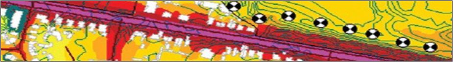

Neural Landscapes : How Our Brain is Shaped by Rural and Urban Environments#
By Alexander Shanov
Introduction#
Within the chapter, Neural Landscapes: How Our Brain is Shaped by Rural and Urban Environments, the neurological changes and effects of plasticity will be covered in two types of living styles. The goal of this chapter will be to observe the influential conditions that cause changes in the brain and how it may adjust as a response to stimuli. There are many associative stimuli between rural and urban living styles, as both have unique and distinguishable conditions. Many sources of stimulation can have a positive impact on neural plasticity and health, while others would have the opposite. In this broad chapter, the scales of each environment will be defined before transitioning to the aspects of social interaction. Emotion and memory have a significant role in neural processes, which will branch off from social interaction. Following this foundation, sensory pollutants will be explored, ranging from sources of noise and light to chemical agents as common greenhouse gases. Finally, the chapter will conclude with a closer examination of how people become suited to live in their living conditions and how sensory overloads impact individuals in distress.
Note

The World Health Organization in 1972 provided evidence that noise is considered a pollutant. To further elaborate, noise is a sensory pollutant that may disrupts neurological and bodily functions at certain volumes throughout the day. Simultaneously, the World Soundscape Project (WSP) aims to improve urban soundscapes and reduce the total disruption caused by loud noise. If left uncontrolled, the quality of life for most residents or workers may be impacted negatively. One potential harm of loud noise in urban environments includes sleep deprivation, as noise stimulates the brain to keep the individual awake. The work from the WSP acted as a catalyst to set limits and controls to the recorded quality of a soundscape. Most cities have taken action by monitoring noise levels throughout the day with established noise restrictions. Going above the maximum noise level in an urban area may begin to cause disruption in the local area. The inclusion of modern technology has also allowed for a visual mapping of the perceived sound based on these previous efforts. As a result, urban soundscapes now include maps of specific areas that cover the total recorded volume on average. These maps can be constructed to observe sound during a given period, say the average in one region at noon or at midnight. With these maps, city officials don’t just observe the volume of sounds, but are also able to pinpoint exactly where they may be produced. As an example, a collection of soundscapes collected in the city of Portugal have revealed striking evidence that support’s the WHO’s initial claim. Almost all major roadways in proximity to commercial or residential complexes have reported significant increases in average noise level. Motorized vehicles were reported to be the major source of the increase besides commercial workspaces during the daytime. While some areas captured noise levels that were within the legal limits, such as parks and fields, most urbanized environments had recorded sound go beyond. Monitoring volume at night and comments from locals have provided evidence that uncontrolled sound leads to sleep deprivation, limiting performance and cognitive processes. The data from Portugal is only one example of the various soundscapes around the world. Each city has distinct methods of controlling sound with a direct effect observed with its inhabitants. By combining all data, officials can strategize new approaches to better improve the quality of life for their communities. (10)
Section 2 - Effects of Sensory Pollutants:#
Sensory pollutants refer to stimuli that may negatively disrupt cognitive function. While neurotoxins are an extreme, multiple stimulation sources can cause disruptions. Due to industrialization, light and noise pollution disrupt functionality of the senses, with both being prevalent in urban environments. Population density also contributes to increased noise, but all noise has a combined effect increasing stimulation. Increased population density also requires mass transport, which contributes to the elevation in noise volume. Mapping soundscapes is a method of pinpointing sources, where most report noise accumulation and volume elevation along highways and major roadways. Residents living in apartment complexes or housing in proximity to roadways report feelings of annoyance and irritation (10). Sleep deprivation is one harmful effect of lacking noise control in urban environments. Loud noise acts as a source of stress, which is indicative of elevated cortisol (27). Energy is depleted in processing audio stimuli, which results in a reduced ability to handle complex tasks with minimal sleep (18). Memory, emotion, and hippocampal learning all see functional declines as sleep deprivation is uncontrolled. Depending on the level of noise during the night, damage may begin to occur. Light pollution similarly has a damaging effect on sleep, where its presence exclusively fits into night life (6).
Light pollution is classified as photons that escape into space without being disrupted by a solid object. Moreover, the night sky is illuminated and visible from miles away (21). Sources include lamp posts, illuminated building signs, car lights, light from inside buildings, and most machinery. Light pollution is also amplified by the type of light, since observable colors fit along the electromagnetic spectrum (EMS) (42). The greater the wavelength, the less intense the light, and vice versa. Red light would therefore be less intense than blue light, as consequences of increased intensity leads to retina damage (14). White and yellow light sources are the most common, which lie close to the center of the visible light region of the EMS. Regardless of type, all intensities contribute to light pollution. Sleep deprivation builds on top of eye strain and constant overstimulation of optical neural pathways (16). Overstimulation of the eyes, specifically during nighttime, has negative impacts similar to noise, but visual stimuli take an alternative neurological pathway (16). Combining both light and noise pollution contributes to the severity of sleep deprivation. Disruption of the circadian rhythm is influenced by stimulation during the night. The brain is unable to regenerate while awake since neural regeneration occurs during sleep (3). While both light and noise are sensory stimuli, light can suppress melatonin production, which keeps the brain in an active daytime state (3). Neuroplasticity, neurotransmission, and gene expression are degraded, as homeostatic regulation is suppressed (3). Homeostatic disruption leads to a depressed mood with physical changes expressed by a slower negative feedback loop (3). In other words, difficulty arises in bodily regulation. Overstimulation from sound and light involve no physical objects unlike chemical agents. The presence of chemicals are unique, in that stimulation is different compared to light and sound. So too is their emission method.
Most chemicals considered are gaseous and airborne across rural and urban environments (30). Chemical transformations in motorized engines, power plants, fireplaces or stoves, industrial sites, and waste disposal account for most sources, where others exist as one form (30). The release of unwanted chemicals into the atmosphere creates a smog which is dominant in urbanized metropolitan areas. Smog is an accumulation soot and greenhouse gases sourced from chemical transformations. Total emissions are dependent on the initial reaction, in which some occur in mass while others are released through a single short-lived transformation. Reactions from transportation alone contribute to 37% of total carbon dioxide released in the United States (38). Transportation being a necessity in urban environments correlates to these areas having greater chemical emissions. Carbon dioxide poses as the pinnacle greenhouse gas, but there are more with alternative properties.
Two additional greenhouse gases include methane and nitrous oxide. The trio accounts for the top gaseous compounds that makeup the Earth’s greenhouse effect, along with minor, but dangerous, contributions from CFC-12, HFC-23, sulfur hexafluoride, and nitrogen trifluoride (37). Only carbon dioxide, methane, and nitrous oxide will be considered, as they have common sources. The rest are exclusive to refrigerants, electrical transmission, and semiconductor manufacturing (37). Both methane and nitrous oxide is released in rural and urban environments but have significant contributions from rural area, as most sources include agriculture and fertilizer application (25) (37). Carbon dioxide emissions are reduced, as most sources include those found in urban environments. However, there is still a minimized release of carbon dioxide from rural environments. Release of all three are heavily amplified in urban areas. Most methane sources in cities include landfills and fossil fuel production, with nitrous oxide produced through combustion of fuels and biomass (37). Carbon dioxide has the greatest release, as almost every source of energy transformation is a contributor. While daily utilities featuring a form of chemical transformation allows for normal living, the consequence on neurological processes are apparent.
The dangers of carbon dioxide have visible impacts on health and brain activity, with the ratio of oxygen absorbed and carbon dioxide released disrupted. Hypercapnia is indicative of elevated levels of carbon dioxide delivered to the brain through the blood (43). This condition effects both the lungs and brain, as neurons send signals to the lungs to breathe deeper to stabilize the oxygen and carbon dioxide concentration. However, an imbalance in the brain also leads to confusion and dizziness, especially with higher concentrations (23). Carbon dioxide is therefore considered an asphyxiant, which is a compound that interferes with bodily oxygen concentrations (44). Both carbon dioxide and monoxide are asphyxiants produced in similar ways but have varying mechanisms in reducing brain activity.
Carbon dioxide production is based on carbon-based energy transformations, where carbon monoxide is a side product formed through failed reactions (45). The supply of oxygen is one reason, where a limited amount leads to incomplete combustion. Intake of carbon monoxide leads to competition between oxygen and carbon monoxide within the hemoglobin complex of red blood cells (45). The non-oxygenated blood travels to the brain, and the inadequate supply leads to cell death overtime. Although like carbon dioxide toxicity, the oxygen delivered to the brain with carbon monoxide is significantly reduced (45). Asphyxiants also include methane and nitrous oxides. Like carbon dioxide, they also interfere with the oxygen ratio in the blood, and each induce unique neurological effects.
Nitrous oxide causes cell death in the brain with elevated exposure, and reduced concentrations interfere with NMDA secretion, leading to reduced synaptic plasticity (33). Nitrous oxide is used as an anesthetic agent in dental surgery, but airborne exposure also possesses toxic effects through emissions. Methane is similar to carbon dioxide asphyxiation, where oxygen displacement occurs (8). Each of the molecules discussed have no odor to them, making them difficult to detect. But some compounds are noticeable as mixtures containing sulfur.
Sulfur, part of hydrogen sulfide gas, has a strong odor, and usually is an indicator to warn the brain of potential pollutant exposure (47). Just like social interaction featuring facial recognition and memory, long term recognition of odors utilizes a three-part neural mechanism to associate specific odors. Sulfur and danger is merely one example. Recall enables long term memory to be retrieved without any cues, but recognition allows for a specific correlation to a memory. Combined stimuli from one point in time are associated with events from the past, resulting in retrieval of the memory (39). Relearning occurs when new stimuli allow for a different association with a memory, which eventually changes the response to the memory (39). With odorless compounds, neurological and bodily damage may begin to occur without warning. Methods of limiting pollution in both urban and rural environments is a necessity, where each requires a different strategic tactic. By first limiting noise and light pollution, efforts can be made to control chemical agents.
Noise and light pollution in urban areas is emphasized in comparison to rural environments. Moreover, many strategies have been deployed, with some being more successful than others. For noise, newer buildings are designed with materials designed to suppress sound waves (19). For older complexes, noise is monitored throughout day, with laws to enforce control (19). Additionally, freeways close to residential buildings often contain noise cancelling walls, especially between suburban housing (19). Declines in light pollution are noticeable with the type of light source (35). The angle of light with newer fixtures is directed downwards rather than unidirectionally to reduce escaping light. Most bulbs are also changed to avoid utilization of blue light, where warm light through LEDs reduces intensity (21). Additionally, electrical mechanisms such as dimmers, motion sensors, and timers all help to prevent escaping light (35). Moving onto chemical pollutants will continue to the investigation of prevention strategies. A further set of comparisons and similarities begin to emerge, as chemical agents are harder to control then first expected.
To begin, methane from agriculture is a byproduct formed through livestock manure. It must be stored to avoid exposure, but total accumulation can be reduced through altering livestock feeding practice (11). Feed specialized in reducing methane production in animals is key in limiting production (11). In industrial practice within urban environments, gas stoves or other natural gas facilities are also controlled. Gas stoves that release natural gasses with methane are slowly being replaced with alternative electrical stove tops (11). Instead of burning gas, electricity is utilized. Nitrous oxides are also maintained with application in agriculture. Many fertilizers containing nitrogen-based compounds are used in bulk for accelerated plant growth (11). In rural areas, farms limit the application of fertilizer containing nitrogen substituents with careful management or a switch to alternative compost (11). Agriculture accounts for the largest release of nitrous oxide, but pales in comparison to burning fossil fuels in industrial application. Urban industries may consider burning alternative fuels, which over time has been proven successful (11). Furthermore, prevention of carbon dioxide and carbon monoxide emissions are key but challenging. Vehicles now utilize more efficient energy transformations with engines designed to burn fuel completely (11). Byproducts, such as carbon monoxide, are therefore suppressed in formation. Additionally, fuels may be replaced with those containing a reduced carbon concentration, which too reduces failed synthesis. New strategies have begun to emerge to not only reduce, by reverse the emission of carbon dioxide (1). Carbon capture and sequestration (CCS) retrieves carbon dioxide from power plants and other industrial utilities to store deep underground through pipe networks (11). While reversing the atmospheric carbon dioxide content may take a while, the individual must be able to react neurologically to the world. The ability to adapt through exposure requires mechanisms of learning and memory, while sensory overload remains an inevitable consequence of overstimulation. The presence of sensory pollutants and social interaction across urban and rural environments are but a few stimuli that influence adaptation and overload.
Section 3: Environmental Adaptations and Sensory Overloads:#
The effects of socialization have been used to explain neurological changes. Urban environments improve plasticity regarding facial recognition, but increased stimuli cause stress levels rise based on living conditions. Working memory is associated with certain pollutants carrying distinct odors alongside recalling memories of individuals or events. While briefly mentioned, the combination of all conditions can either improve plasticity, or lead to disfunction through negative stimuli. Sources of stimuli in both rural and urban environments range in type and amplitude, leading to varied reactions. Mood plays an important role in that human emotions and living conditions induce changes in the brain. The effects of mood and emotional response reveals that individuals raised in rural areas experience elevated emotional resilience when exposed to nature-enriched conditions (22). For urban areas, threatening stimuli through social instances is associated with the development of post-traumatic stress disorder (22). Moreover, children raised in rural environments have improved spatial performance skills compared to children from urban environments (20). Brain scans indicate that rural children have increased left hippocampal formation compared to urban children, which suggests that opportunities for spatial exploration might be linked with brain plasticity and improvement in spatial tasks. Urbanization too benefits in that stress tolerance is a neural mechanism preventing social defeat (24). Urban individuals are observed to have a limbic stress regulation system experiences a modulation in the perigenual anterior cingulate cortex (pACC) (24). The pACC is associated with the amygdala where the system controls social stress factors. The amygdala is stimulated by fearful, stressful situations, where a social threat is processed, and a bodily response will be represented as an output (41). However, abnormalities between the connections of the pACC and the amygdala are observed in individuals with mental disorders, such as anxiety and schizophrenia (17). Adaptation is therefore noticeable in social interactions through activation of stress regulation mechanisms. Urban environments provide conditions for stress regulation to operate, as the increased population density promotes social interaction. Exposure to sensory pollutants is also correlated to stress regulation, but the bodily damage of sleep deprivation from light and noise pollution still occurs (12). Homeostatic mechanisms instead operate to maintain vitality. Adaptation for rural environments plays a role in two ways. Emotional resilience is indicative of quick recovery while improved spatial performance is a skill learned just like facial recognition. While stress responses may be controlled and improved by the dual-natured activity, instances where living conditions play a role may override the neural mechanisms to cause more harm than good. This would especially be noticeable for those migrating from rural to urban environments as a sudden physical response through a sensory overload.
The unison of topics makes up the potential for sensory overloads to occur. Overstimulation is a theme circulating around the potential of experiencing an overload, which also incorporates a threshold of neural processing. Sensory overload occurs when stimulation exceeds the processing threshold handled exclusively by the individual (48). Many factors contribute to the capacity before reaching the threshold, where living environments play a role. As individuals become accustomed to their environment, they adapt to the level of stimuli received (49). If a rural environment has fewer stimulation sources, then the threshold will be lower. The opposite applies to urban environments, where more stimuli result in higher thresholds. The capacity of neural processing is like a reservoir. Stimuli can be received and processed before restabilizing. The reservoir is filled before being lowered. However, neural stimulation always occurs, so the reservoir is never empty. When overstimulation occurs, the reservoir begins to flood, leading to bodily harm. Sensory overload correlates to the flooding, as exceeding the threshold goes beyond the brain’s ability to process stimuli (49). The stress regulation system (pACC and the amygdala) is activated, resulting in a neurological attempt to warn the individual through allostasis (28). An increase in blood pressure and heart rate is noticeable, but alternative brain regions are also activated (28) (32). The prefrontal cortex and hippocampus contain mechanisms of decision making alongside their respective functions. The combination of neural activity reduces the allosteric load through a homeostatic event, returning brain activity to normalized processing (28). Stress regulation is overclocked when a rural individual migrates to an urban environment. New stimuli bombard the rural individual by quickly overwhelming the brain’s ability to process information due to a decreased processing capacity (50). The presence of sensory pollutants further amplifies neural activation, as negative or threatening stimuli requires processing from more regions of the brain (31). Conversely, urban individuals that migrate to rural environments can withstand the transition. Reduced sources of stimulation with an increased processing capacity have a limited effect on stress regulation, with only new stimuli having an effect
Conclusion#
To conclude, the analysis of the following chapter covered how neural activity ranges between urban and rural environments. Social interaction is involved in many neurological processes indicative of facial recognition, memory, and emotion. Population density improves urban improved facial recognition, but short term-memory is often lost. Moreover, rural environments include stimuli that improve mood through nature. Sensory pollutants through sound, light, and chemicals are intensified in in urban environments since industrialization and motorized vehicles are primary sources. Sources of chemical emissions and prevention tactics are mixed between urban environments when accounting for carbon dioxide, methane, and nitrous oxides. Adaptation to both environments relies on stimuli when exposed to the respective environment. Spatial performance and emotional resilience is observed in rural environments and stress tolerance within urban environments. Stress regulation depends on the capacity of stimulation processing, where urban environments have greater capacity before experiencing an overload. Rural individuals however have reduced capacity, resulting in a sensory overload as adaption relates to experience within respective environments. The living environment for everyone is a strong driving force to adjust and alter neural activity. While the type of stimulus differs, an abundance when orchestrated in unison has drastic effect.
Chapter Quiz#
What defines a rural and urban environment? What are individual factors that would correlate with changes in plasticity along with the well-being of an inhabitant within one of these environments?
What are examples of pollutants and conditions that influence plasticity within both environments? List them and provide a reason for their neurological influence. If the pollutant or condition results in adjustments to overall health, then provide an explanation as to how one might experience a change in neurological development or plasticity.
Is social interaction a factor that influences plasticity? Besides plasticity, how might different population densities through a rural and urban environment result in neurological changes or functions? Provide a key concept and mention what regions of the brain may be affected along with functionality. With these concepts and correlations, why won’t two individuals be the same, even if physically appear identical?
Between rural and urban environments, why might one individual be more accustomed to one environment compared to another? What neurological factors contribute to this occurring within different people?
How would a sensory overload function overall and neurologically? In what context would you experience a sensory overload and what stimuli would be examples that result in an instance occurring. Are there any possible risks through a sensory overload occurring?
References#
“Atmospheric Carbon Dioxide.” U.S. Global Change Research Program, www.globalchange.gov/indicators/atmospheric-carbon-dioxide#:~:text=There is an overall upward,than 20%25 in 42 years. Accessed 23 Nov. 2023.
Bashan, Danielle. “Urban versus Rural? The Effects of Residential Status on Species Identification Skills and Connection to Nature.” British Ecological Society, 3 Feb. 2021, besjournals.onlinelibrary.wiley.com/doi/full/10.1002/pan3.10176.
Bedrosian, T A, and R J Nelson. “Timing of Light Exposure Affects Mood and Brain Circuits.” Translational Psychiatry, U.S. National Library of Medicine, 31 Jan. 2017, www.ncbi.nlm.nih.gov/pmc/articles/PMC5299389/#:~:text=Nighttime light can indirectly affect,regions involved in emotional regulation.
Blais, Caroline, et al. “Cultural Differences in Face Recognition and Potential Underlying Mechanisms.” Frontiers in Psychology, U.S. National Library of Medicine, 13 Apr. 2021, www.ncbi.nlm.nih.gov/pmc/articles/PMC8076495/.
Bureau, US Census. “Urban and Rural.” Census.Gov, 26 Sept. 2023, www.census.gov/programs-surveys/geography/guidance/geo-areas/urban-rural.html.
Chepesiuk, Ron. “Missing the Dark: Health Effects of Light Pollution.” Environmental Health Perspectives, U.S. National Library of Medicine, Jan. 2009, www.ncbi.nlm.nih.gov/pmc/articles/PMC2627884/.
Cowan, Nelson. “What Are the Differences between Long-Term, Short-Term, and Working Memory?” Progress in Brain Research, U.S. National Library of Medicine, 2008, www.ncbi.nlm.nih.gov/pmc/articles/PMC2657600/.
“The Critical Dangers of Methane Gas Poisoning and Exposure.” NevadaNano, NevadaNano, 11 Oct. 2023, nevadanano.com/methane-gas-poisoning-and-exposure/.
Cromartie, John. “What Is Rural?” USDA ERS - What Is Rural?, 23 Oct. 2019, www.ers.usda.gov/topics/rural-economy-population/rural-classifications/what-is-rural/#:~:text=Census Bureau Defines Urban and,its urban-rural classification system.
de Paiva Vianna, Karina Mary, et al. “Noise Pollution and Annoyance: An Urban Soundscapes Study.” Noise & Health, U.S. National Library of Medicine, 2015, www.ncbi.nlm.nih.gov/pmc/articles/PMC4918656/.
EPA. “Overview of Greenhouse Gases | US EPA.” United States Environmental Protection Agency, 10 Oct. 2023, www.epa.gov/ghgemissions/overview-greenhouse-gases.
Eugene, Andy R, and Jolanta Masiak. “The Neuroprotective Aspects of Sleep.” MEDtube Science, U.S. National Library of Medicine, Mar. 2015, www.ncbi.nlm.nih.gov/pmc/articles/PMC4651462/#:~:text=Sleep is needed to regenerate,an impact on their performance.
Göz, Ïlyas. “Urban-Rural Differences in Children’s Earliest Memories.” Memory (Hove, England), U.S. National Library of Medicine, 29 Feb. 2016, pubmed.ncbi.nlm.nih.gov/26924547/#:~:text=Moreover%2C memories of children from,%2C autonomous orientation%2C or emotion.
Health, Cultivating. “How Blue Light Affects Your Eyes, Sleep, and Health.” Health, 3 Aug. 2022, health.ucdavis.edu/blog/cultivating-health/blue-light-effects-on-your-eyes-sleep-and-health/2022/08#:~:text=Constant exposure to blue light,white part of the eye.
Jacobson, Alexandria. “Is It Sensory Overload or Screen Fatigue?” Built In, 31 May 2022, builtin.com/people-management/sensory-overload#.
Karlsgodt, Katherine H, et al. “Structural and Functional Brain Abnormalities in Schizophrenia.” Current Directions in Psychological Science, U.S. National Library of Medicine, Aug. 2010, www.ncbi.nlm.nih.gov/pmc/articles/PMC4235761/#:~:text=Schizophrenia is associated with changes,memory and declarative memory%2C respectively.
Krause, Adam J, et al. “The Sleep-Deprived Human Brain.” Nature Reviews. Neuroscience, U.S. National Library of Medicine, July 2017, www.ncbi.nlm.nih.gov/pmc/articles/PMC6143346/.
Kwok, Bonnie. “What Are the Most Effective Strategies for Reducing Noise and Air Pollution in Crowded Cities?” How to Reduce Noise and Air Pollution in Dense Cities, www.linkedin.com, 15 Mar. 2023, www.linkedin.com/advice/1/what-most-effective-strategies-reducing-noise-air#noise-pollution.
Kühn, Simone. “Brain Structure and Habitat: Do the Brains of Our Children Tell Us Where They Have Been Brought Up?” NeuroImage, Academic Press, 13 Aug. 2020, www.sciencedirect.com/science/article/pii/S1053811920307114.
L, Luginbuhl. “Light Pollution Sources.” National Parks Service, U.S. Department of the Interior, 2009, www.nps.gov/subjects/nightskies/sources.htm#:~:text=The primary cause of light,diminishing the view of it.
Lambert, Kelly G, et al. “Brains in the City: Neurobiological Effects of Urbanization.” Neuroscience and Biobehavioral Reviews, U.S. National Library of Medicine, Nov. 2015, www.ncbi.nlm.nih.gov/pmc/articles/PMC4774049/.
Leader, Deborah. “Health Problems Can Cause Excess Carbon Dioxide Blood Levels.” Verywell Health, Verywell Health, 12 June 2023, www.verywellhealth.com/hypercapnia-symptoms-treatment-914862#:~:text=Symptoms of high CO2 levels,to intubation and mechanical ventilation.
Lederbogen, Florian, et al. “City Living and Urban Upbringing Affect Neural Social Stress Processing in Humans.” Nature News, Nature Publishing Group, 22 June 2011, www.nature.com/articles/nature10190.
Malerba, Martino E., et al. “Methane Emissions from Agricultural Ponds Are Underestimated in National Greenhouse Gas Inventories.” Nature News, Nature Publishing Group, 5 Dec. 2022, www.nature.com/articles/s43247-022-00638-9.
Matiullah, Sadaf, et al. “Rural and Urban Variation in Psychological Distress among Adults: Results of the 2014-2015 Eastern Townships Population Health Survey (ETPHS).” Canadian Journal of Public Health = Revue Canadienne de Sante Publique, U.S. National Library of Medicine, Apr. 2021, www.ncbi.nlm.nih.gov/pmc/articles/PMC7910330/.
Mills, Betsy. “Do Loud Noises Harm the Brain?” Alzheimer’s Drug Discovery Foundation, 20 Nov. 2020, www.alzdiscovery.org/cognitive-vitality/blog/do-loud-noises-harm-the-brain#:~:text=Noise acts as a stressor,in cognitive performance [3].
McEwen, Bruce S, and Peter J Gianaros. “Central Role of the Brain in Stress and Adaptation: Links to Socioeconomic Status, Health, and Disease.” Annals of the New York Academy of Sciences, U.S. National Library of Medicine, Feb. 2010, www.ncbi.nlm.nih.gov/pmc/articles/PMC2864527/#:~:text=Instrumental brain systems of this,maladaptive in the long-term.
Pascalis, Olivier, et al. “Development of Face Processing.” Wiley Interdisciplinary Reviews. Cognitive Science, U.S. National Library of Medicine, Nov. 2011, www.ncbi.nlm.nih.gov/pmc/articles/PMC3203018/#:~:text=For example%2C it is evident,%2C and own-age).
Phillips, Jodie. “Air Pollution in Urban Environments: Causes and Solutions.” Sustainable Living, 9 Aug. 2023, www.environmentalconsortium.org/air-pollution-in-urban-environments-causes-and-solutions/#:~:text=Gaseous emissions of pollutants into,soot%2C carcinogens and other substances.
Reisch, Lea Marie, et al. “Negative Content Enhances Stimulus-Specific Cerebral Activity during Free Viewing of Pictures, Faces, and Words.” Human Brain Mapping, U.S. National Library of Medicine, 15 Oct. 2020, www.ncbi.nlm.nih.gov/pmc/articles/PMC7502837/#:~:text=Negative visual stimuli have been,and lateralization of the activity.
ich, Robert. “Mind/Body Connection: How Emotions Affect Health.” Familydoctor.Org, 7 Dec. 2022, familydoctor.org/mindbody-connection-how-your-emotions-affect-your-health/#:~:text=Your body responds to the,death of a loved one.
Savage, Sinead, and Daqing Ma. “The Neurotoxicity of Nitrous Oxide: The Facts and ‘Putative’ Mechanisms.” Brain Sciences, U.S. National Library of Medicine, 28 Jan. 2014, www.ncbi.nlm.nih.gov/pmc/articles/PMC4066238/#:~:text=N2O has been,signal from excitatory glutamatergic neurons.
Spencer, Megan. “How to Tell the Difference between Moods, Feelings, and Emotions.” Dakota Family Services, 7 June 2022, dakotafamilyservices.org/resources/blog/archive/moods-feelings-emotions/.
Staff. “Solutions to Light Pollution.” DarkSky International, 10 Apr. 2018, darksky.org/resources/what-is-light-pollution/light-pollution-solutions/#.
Stosny, Steven. “The Emotions of Social Interaction | Psychology Today.” Psychology Today, 25 Feb. 2017, www.psychologytoday.com/us/blog/anger-in-the-age-entitlement/201702/the-emotions-social-interaction.
Tans, Pieter. “Main Greenhouse Gases.” Center for Climate and Energy Solutions, 3 Feb. 2023, www.c2es.org/content/main-greenhouse-gases/.
“U.S. Energy Information Administration - EIA - Independent Statistics and Analysis.” Where Greenhouse Gases Come from - U.S. Energy Information Administration (EIA), 22 Aug. 2023, www.eia.gov/energyexplained/energy-and-the-environment/where-greenhouse-gases-come-from.php#:~:text=In the United States%2C most,and petroleum—for energy use.
University of Central Florida. “Retrieval.” General Psychology, pressbooks.online.ucf.edu/lumenpsychology/chapter/reading-retrieval/#:~:text=There are three ways you,recall for an essay test. Accessed 23 Nov. 2023.
Wei, Hongxu. “Relationship between Environmental Factors and Facial Expressions of Visitors during the Urban Forest Experience.” Urban Forestry & Urban Greening, Urban & Fischer, 18 May 2020, www.sciencedirect.com/science/article/abs/pii/S1618866719308775.
Šimić, Goran, et al. “Understanding Emotions: Origins and Roles of the Amygdala.” Biomolecules, U.S. National Library of Medicine, 31 May 2021, www.ncbi.nlm.nih.gov/pmc/articles/PMC8228195/#:~:text=Emotions arise from activations of,nucleus%2C and ventral tegmental area.
Britannica, The Editors of Encyclopaedia. “electromagnetic spectrum”. Encyclopedia Britannica, 17 Nov. 2023, https://www.britannica.com/science/electromagnetic-spectrum. Accessed 1 December 2023.
Brody, Barbara. “Hypercapnia (Hypercarbia): Symptoms, Causes, Treatment.” WebMD, WebMD, 29 Oct. 2021, www.webmd.com/lung/copd/hypercapnia-copd-related.
Permentier, Kris, et al. “Carbon Dioxide Poisoning: A Literature Review of an Often Forgotten Cause of Intoxication in the Emergency Department.” International Journal of Emergency Medicine, U.S. National Library of Medicine, Dec. 2017, www.ncbi.nlm.nih.gov/pmc/articles/PMC5380556/.
“Carbon Monoxide.” Centers for Disease Control and Prevention, Centers for Disease Control and Prevention, 9 July 2018, www.cdc.gov/niosh/topics/co-comp/default.html.
“Hydrogen Sulfide.” Centers for Disease Control and Prevention, Centers for Disease Control and Prevention, 21 June 2019, www.cdc.gov/niosh/topics/hydrogensulfide/default.html#:~:text=Hydrogen sulfide (H₂S) is a,%2C and if liquid%3A frostbite.
Boudewijn van den Berg. “Real-Time Estimation of Perceptual Thresholds Based on the Electroencephalogram Using a Deep Neural Network.” Journal of Neuroscience Methods, U.S. National Library of Medicine, pubmed.ncbi.nlm.nih.gov/35346697/. Accessed 1 Dec. 2023.
White, Holly, and Priti Shah. “Attention in Urban and Natural Environments.” The Yale Journal of Biology and Medicine, U.S. National Library of Medicine, 25 Mar. 2019, www.ncbi.nlm.nih.gov/pmc/articles/PMC6430180/.
Nougaret, Simon, and Aldo Genovesio. “Learning the Meaning of New Stimuli Increases the Cross-Correlated Activity of Prefrontal Neurons.” Nature News, Nature Publishing Group, 3 Aug. 2018, www.nature.com/articles/s41598-018-29862-0